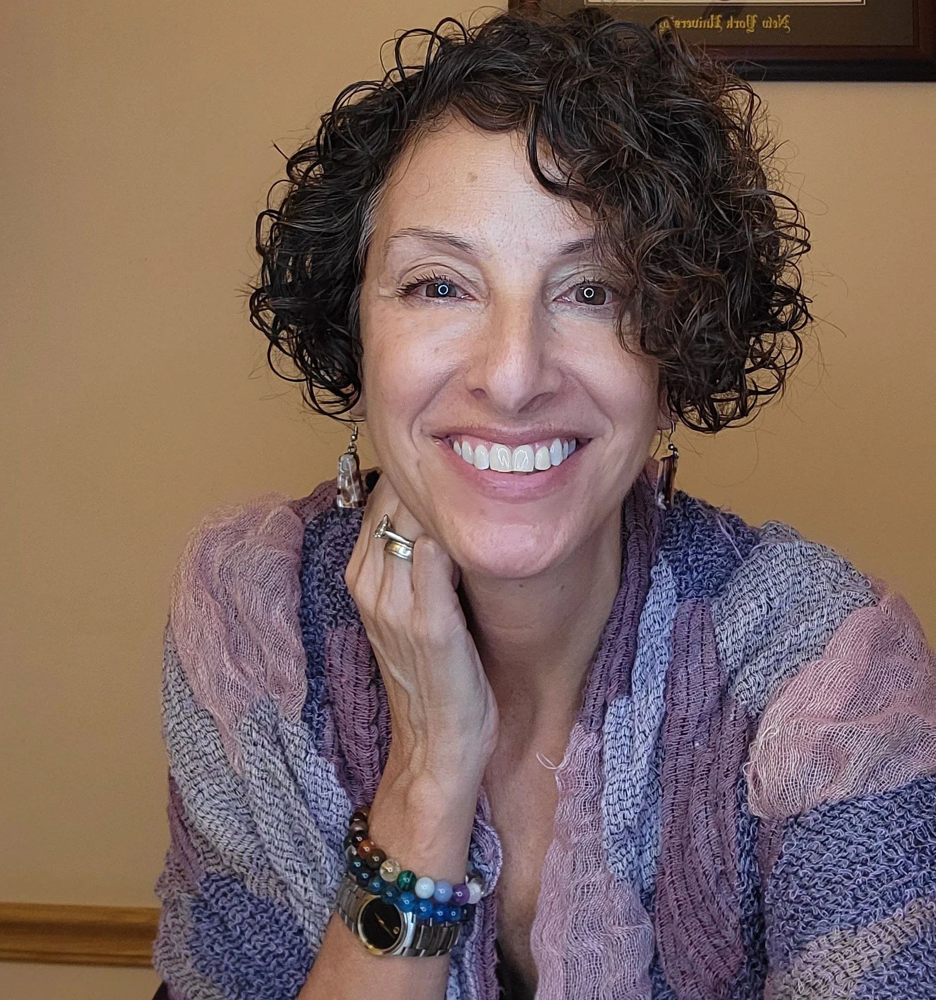

Wed, 26 Ap
HOME
Hello! My name is Robin Schlenger.

Supervision, Coaching, & Training with an Anti-Racist and Anti-Oppressive Lens
After attending my first anti racist training with The People’s Institute of Survival and Beyond, I came face to face with the inescapable reality that as a white woman, I was perpetuating a system of oppression and racism.
I’ve discovered that although my whiteness makes me part of the problem, I can become part of the solution when I take actionable responsibility. This can look like:
Deeply examining my racial identity and culture.
Challenging my biases.
Educating myself and learning from history.
Networking and building alliances across race and culture.
Challenging and expanding my perspectives.
I am deeply committed to continuing this journey and supporting others on theirs.
Let’s work together.